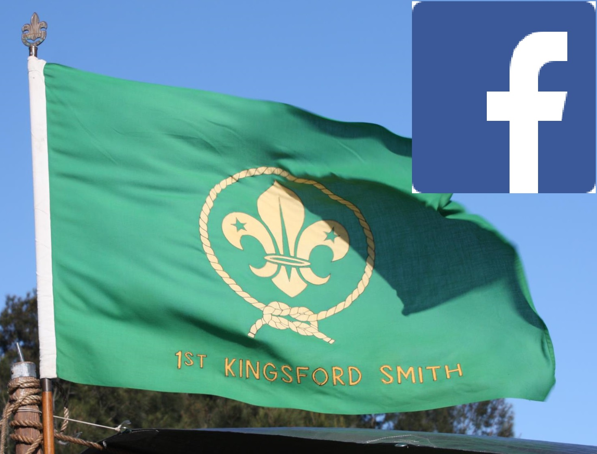
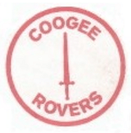

Links
Here are a few useful websites and resources.

Kingsford Smith Youtube channel
www.youtube.com/c/KingsfordsmithOrgAuScouts

Kingsford Smith Scout Group Facebook page
www.facebook.com/kingsfordsmithscouts

South Metropolitan Region Scouts website

New South Wales Scouts website
Scouts Australia website

Scout Shop - Online Scout-related shopping.
Rose Bay Rovers - Our associated Rover Crew
